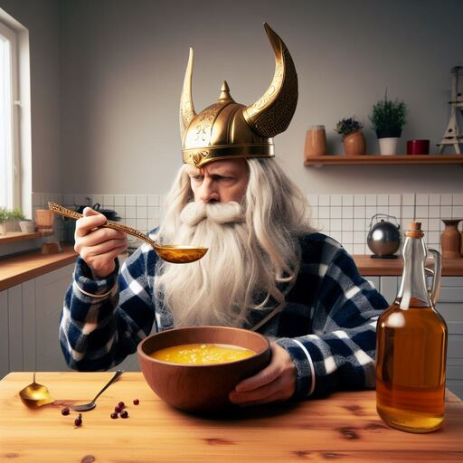

I Mead My Breakfast
Start the day the way you mead to go on
Odin's preferred way to break his fast
Ingredients
- Mead
- optional extra: a little drizzle of honey
Steps
- Pour some mead in a bowl
- Eat it with a spoon
- Odin thinks you are a bit of a fool if you are thinking of adding honey to your mead, "why would you add honey to your honey wine"